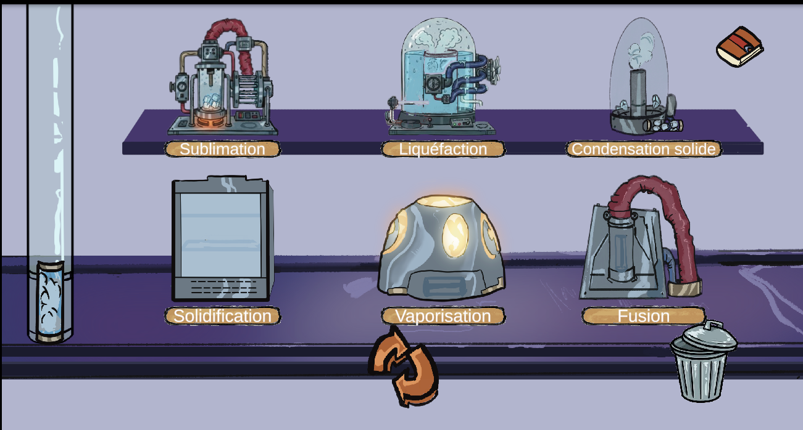
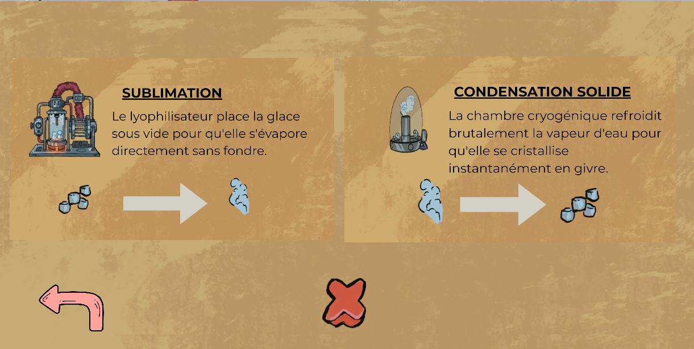

Hydroliaz Station
Création d'assets 3D sur Blender pour le jeu vidéo FPS Dungeon FPS sur Unity programmé par moi-même.
Détails du projet
Jeu sérieux d'e-learning dans lequel le joueur incarne un barman dans une station spatiale. Il doit servir de l'eau sous ses différents états — liquide, solide et gazeux — aux différents aliens.
L'eau arrive dans un état variable selon l'heure. Le joueur doit utiliser des machines dédiées aux changements d'état (liquéfaction, solidification, vaporisation, etc.) afin d'obtenir l'état approprié pour chaque client. Un guide et des images permettent aux joueurs de connaitre et de retenir les différentes transformations de l'eau.
L'eau arrive dans un état variable selon l'heure. Le joueur doit utiliser des machines dédiées aux changements d'état (liquéfaction, solidification, vaporisation, etc.) afin d'obtenir l'état approprié pour chaque client. Un guide et des images permettent aux joueurs de connaitre et de retenir les différentes transformations de l'eau.
Contexte
Projet réalisé en première année de Master AMINJ, dans le cadre d'un exercice de création d'un jeu sérieux d'e-learning.
Le client, un laboratoire scientifique, souhaitait intégrer à son site web un jeu éducatif destiné aux collégiens et lycéens. L'objectif était de leur permettre d'apprendre et de retenir les noms des différentes transformations de l'eau.
Les différents projets de la classe étaient en compétition, le client devant sélectionner le projet dans lequel investir.
Le client, un laboratoire scientifique, souhaitait intégrer à son site web un jeu éducatif destiné aux collégiens et lycéens. L'objectif était de leur permettre d'apprendre et de retenir les noms des différentes transformations de l'eau.
Les différents projets de la classe étaient en compétition, le client devant sélectionner le projet dans lequel investir.
Mon rôle
Développeur C#
- Création des UI notamment du guide
- Création du système de spawn des aliens
- Création du système de validation des boissons
Technologies et outils utilisées
- Unity : Développement du jeu
Conclusion :
Premier projet de jeu sérieux; très intéressant et instructif.
Il m'a réflechir à quel type de gameplay choisir suivant le type d'informations qu'on veut transmettre.
Ce qui s'est traduit dans notre jeu par la répétition de l'information : pour que l'utilisateur retiennent les informations.
Ce projet m'a fait me rendre compte que les jeux sérieux ne devaient se limiter qu'au simple QCM. Qu'on peut proposer une expérience réellement ludique tout en transmettant de la connaissance.
Il m'a réflechir à quel type de gameplay choisir suivant le type d'informations qu'on veut transmettre.
Ce qui s'est traduit dans notre jeu par la répétition de l'information : pour que l'utilisateur retiennent les informations.
Ce projet m'a fait me rendre compte que les jeux sérieux ne devaient se limiter qu'au simple QCM. Qu'on peut proposer une expérience réellement ludique tout en transmettant de la connaissance.
Gallerie d'image

Image du côté bar : l'endroit où le joueur récupère l'eau et puisse utiliser les machines pour la transformer.
Image du guide : Le joueur peut le consulter quand il veut pour se remémorer ou voir les transformations